Use the location dashboard
Last updated October 8th, 2026
On this tab
The Location dashboard lets you track the geographical location and mobile signal strength of your enterprise mobile devices in real-time. To launch the dashboard, select Location from the left navigation pane.
Location data will not appear on the dashboard until you’ve enabled the Location tracking settings and your users have granted Location permissions.
Device status
At the top of the Location dashboard, you’ll find a grid that lets you view all location-related statuses for your device fleet.
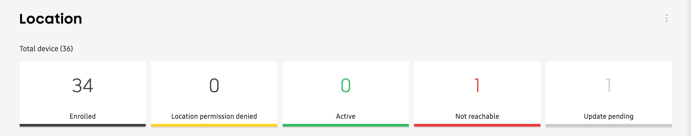
The following statuses are displayed:
- Enrolled: The device is enrolled, but location data is unavailable.
- Location permission denied: The user has denied location tracking permission on their device.
- Active: The device is returning its outdoor location information and is reachable.
- Not reachable: The device’s location was not returned after 24 hours, or the location request was unsuccessful.
- Update pending: A manual location request was initiated, and Knox Asset Intelligence is currently attempting to retrieve the device’s location. If there is no response after an hour, a device is added to the Not reachable status count.
Location map
The map displays your device groupings (represented by gray circles on the map) as soon as you open the Location dashboard. When you zoom in, the circles update to show the device distribution across a given area.
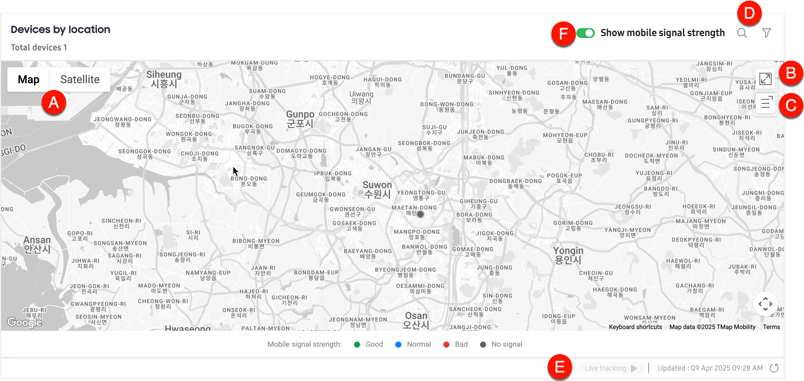
The map features the following:
| Reference | Feature | Description |
|---|---|---|
| A | Map view type | The type of map displayed, whether Map or Satellite. By default, the map opens in satellite view. |
| B | Expanded map view | Lets you view a full screen version of the map. Once expanded, click the button again to return to the default map view. |
| C | Devices list | Lets you see the IDs of every device currently in view on the map. The number of devices shown will correspond with the number of devices in the bubble, and may vary depending on the current map zoom level. |
| D | Search and filter |
Click the Search icon and enter a device IMEI number to locate it on the map. If the device is sending location data, you'll see its last known location represented by a dot. Click X in the search field to clear your results and return to the default map view. Click the Filter icon to locate devices that report a specific status or mobile signal strength. Select your filter options, then click APPLY FILTERS to view only those devices on the map. To remove your filters, click the Filter icon once again, then click CLEAR. |
| E | Live tracking |
Click to receive continuous location updates from your devices for up to 30 seconds at a time. Live tracking stops after 30 seconds, after which you'll have to click the Live tracking button once again to receive continuous updates for another 30 seconds. This button can only be clicked after a certain zoom level. If you can't click the button, try zooming in on the map until you can. If your devices are active and reporting location data, you'll see a dot on the map showing the device's location. As the device moves, the dot on the map also moves. |
| F | Mobile signal strength |
Lets you identify when devices are situated in areas with weak cellular coverage or potential dead zones. To use this feature, you must first enable Mobile signal strength with location. On the map, you'll see the mobile signal strength status of every device in your fleet represented by colored dots. These dots are updated at the same rate as your location data collection frequency.
These dots also appear in the map's Device list, letting you quickly correlate the device IDs with each mobile signal strength status. If you want to only show devices with a specific status—for example, only show Bad devices—you can select the status using the map's Filter options next to the Search icon. |
Manage assets
The Assets table below the map lets you quickly see the location status and last known update times for all of your enrolled devices. This table consists of two tabs:
- Devices — Your mobile devices (smartphones and tablets). See the Location Overview page for a full list of devices that support location tracking features.
- Sets — Your location-tracking devices organized into logical collections.
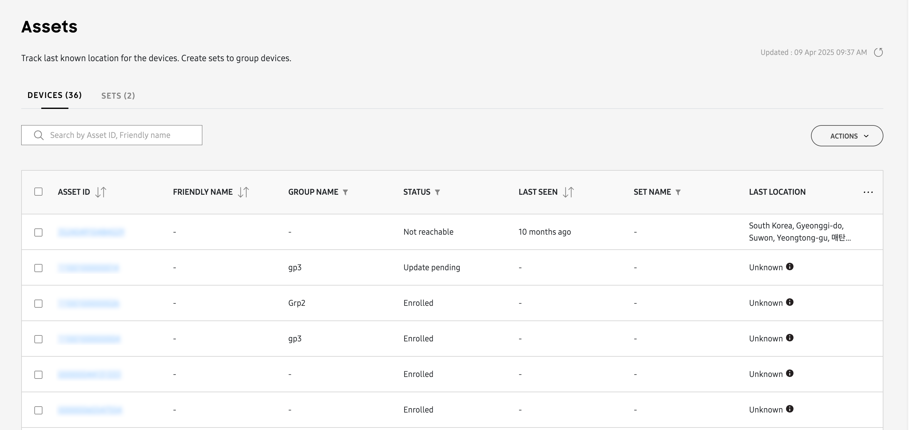
Upload assets
The Devices in the Assets table are uploaded through the normal device upload process documented on the Manage devices page.
Sets
Sets are logical collections of devices that exist only within the Location dashboard. They function similarly to device groups, but with the following differences:
- Sets can be created on the console, whereas Groups can only be created by uploading a CSV file or through an EMM.
- The same device can exist in several Sets, whereas a device can only exist in one Group.
A default set (S.0) containing all (location enabled) devices is automatically created. This default set can’t be deleted. You can create additional Sets based on your requirements.
To create a set:
- On the Assets page, click the SETS tab, then click NEW SET. The Add devices to new set page opens.
- Select one or more devices from the list, then click ADD. You can also use the search bar to find devices before adding.
- In the Create new set dialogue, give your set a name and optional description, then click ADD. The name can only contain alphabetic, number, dash, or period characters, and cannot be more than 18 characters in length.
- Navigate back to the SETS tab to view a list of all sets in your fleet.
To edit set information:
- Click a SET ID from the list. A side-panel displays your set information.
- Click Edit to change your set name, use the toggle to make the set Active or Inactive, or click DELETE SET to remove it entirely.
To add or remove devices in a set:
- Select a set from the list, then click the ACTIONS > Add devices to set or Remove devices from set.
- On the following page, select the devices from the list, then click ADD or REMOVE.
To delete a set:
- Select one or more sets from the list, then click the ACTIONS > Delete set(s).
- On the following window, click CONFIRM.
To download your sets information as a CSV file, select one or more sets from the list, then click the ACTIONS > Download CSV.
View asset information
Viewing asset information from the Location dashboard is similar to viewing device information from the Devices page. Simply select an ASSET ID to view the asset details in a side panel.
If you have many assets in your list, you can quickly find an asset by entering its IMEI or serial number in the search field.
Last location
If a device is reporting location data, you’ll see an address link appear in the LAST LOCATION column of the Assets table. You can click the link to zoom to that device’s last known location, where you’ll see a purple dot appear on the map. Hover over the dot to see the device’s coordinates and current device status.
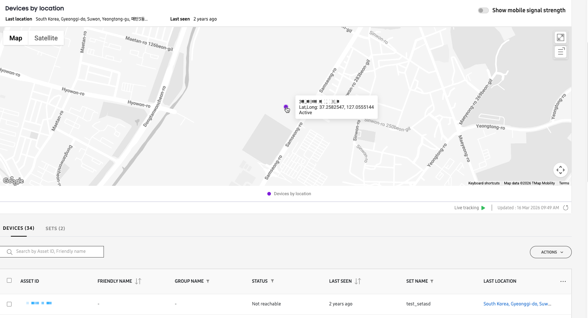
Find an asset
The Assets table provides several tools to help find devices in the real world more easily. With these tools, you can force the device to play a sound, vibrate, or turn on its flashlight for a set duration, and send notifications to device users with instructions to contact the company in the event the device is found.
To find an asset:
-
In the Assets table, use the checkboxes to select one or more devices, then click ACTIONS > Find asset.
-
In the Sound field, set the alert volume level by moving the slider.
-
In the Vibrate field, toggle whether you want to force the device to vibrate (Default: Off ).
-
In the Flash light field, toggle whether you want to turn on the camera’s flashlight (Default: Off ).
-
In Battery saving mode, toggle on if you want to place the device in battery saving mode when an alert is sent (Default: Off ).
-
In Set time period for the triggers, select the duration that you want to trigger the alert for:
- Until the device is found: activates the alert until the device user responds to it.
- Set duration (Default: 30 minutes): Determines the amount of time that the alert is active.
-
In SUPPORT CONTACT DETAILS, enter the name of your organization and a contact phone number. The users will see a notification asking them to call this number if the device is found.
-
Click FIND NOW to send the alert and notification to the selected devices.
Find asset user screen
After you click FIND NOW, the user sees a full screen notification on the device asking them to swipe to turn off the alarm. Doing so lets you know that the asset isn’t lost, and is still in use. In case the user misses the alert, a message appears in the notification panel that instructs them to contact you about their device.
If the device is lost and you’ve filled in your organization’s contact info, a button appears underneath the alarm with a contact number. The user can tap the button to call the number on the screen.
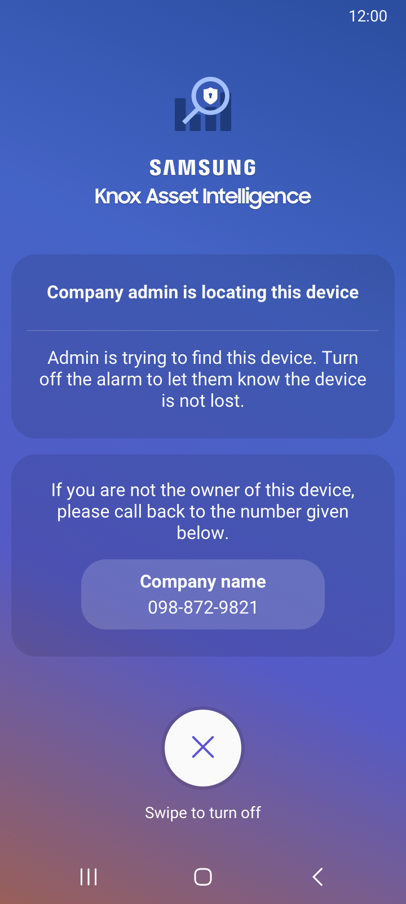
Get the latest location
If you want to get the last known location for a device without having to wait for its next update interval, you can use the Get the latest location feature. To do this:
-
On the Assets page, use the checkboxes to select one or more devices, then click ACTIONS > Get the latest location.
-
The Assets page will update and you will see:
- Update pending in the STATUS column for your queried device(s) if they are not active.
- An updated date & time in the LAST SEEN column and location information in the LAST LOCATION if they do respond.
This document was updated for the Knox cloud services 26.10 UAT.
On this tab
- Device Status Reference
- Track Device Locations
- View device clusters
- Search for a Specific Device
- Filter devices
- Manage location-enabled devices
- When to use Sets vs. Groups
- View DEVICES table
- View SETS table
- About Set types
- Manage Sets
- Edit set information
- Add or remove devices
- Delete a set
- Download set information
- Locate lost devices
- Find asset
- Get a device’s latest location
- Offline Location Tracking
- Troubleshoot common issues
The Location dashboard lets you track the geographical location and mobile signal strength of your enterprise mobile devices in real-time. Use this dashboard to locate lost devices, monitor device movement, and organize location-enabled devices for easier and more efficient fleet management.
To launch the dashboard, go to Dashboard from the left navigation pane, then select Location.
Location data will not appear on the dashboard until you’ve enabled the Location tracking settings and your users have granted Location permissions.
Device Status Reference
At the top of the Location dashboard, a grid displays your device fleet’s status, showing if devices are actively reporting location data, unreachable, or need attention. Available status categories include:
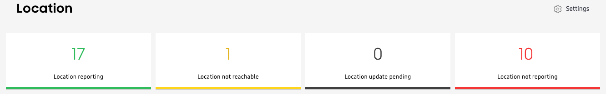
| Status | Description |
|---|---|
| Location reporting |
The device is returning its outdoor location information and is reachable. This status has three subcategories:
|
| Location not reachable | The device's location was not returned after 24 hours, or the location request was unsuccessful. |
| Location update pending | A manual location request was initiated, and Knox Asset Intelligence is currently attempting to retrieve the device's location. If there is no response after an hour, the device is added to the Location not reachable status count. |
| Location not reporting | The user has denied location tracking permission on their device. The Find asset and Get latest location actions are inactive for devices with this status. |
Track Device Locations
The Location dashboard map shows where your devices are and their current connectivity status.
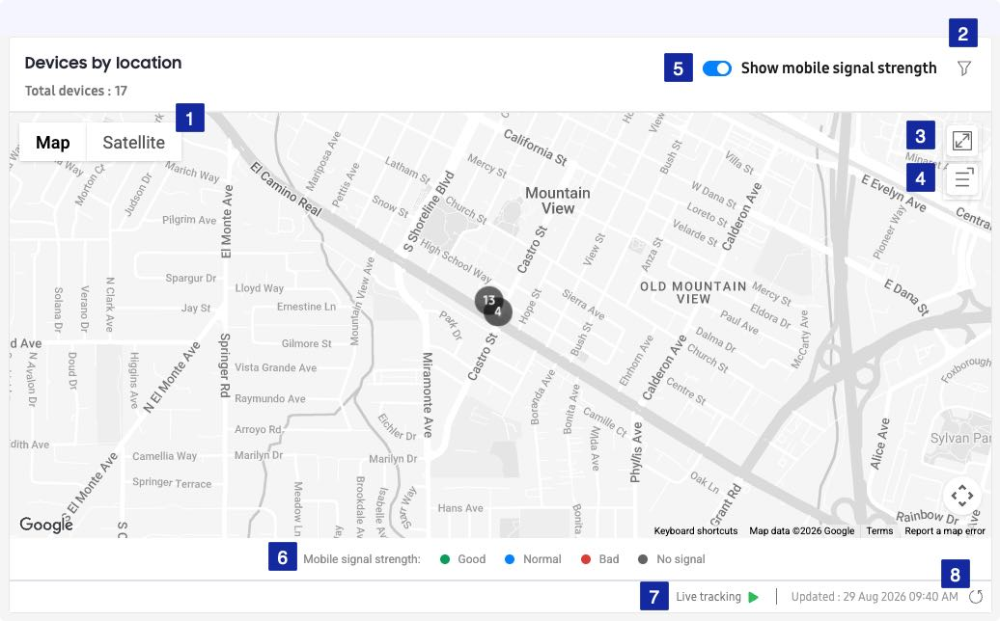
The map displays the following elements:
- Map view type: Switch between Map and Satellite views. By default, the map opens in Satellite view.
- Map filter: Show only devices with specific characteristics, such as unreachable devices. See Filter devices for more details.
- Expanded map view: Open the map in full-screen view. Click again to return to the default view.
- Devices list: View the IDs of devices currently shown on the map. The number shown matches the device cluster count and may vary by zoom level.
- Show mobile signal strength: Identify devices in areas with weak cellular coverage or potential dead zones. To use this feature, enable Mobile signal strength with location.
- Mobile signal strength legend: When Show mobile signal strength is enabled, colored dots appear below the map:
- Good (green): -70 dBm or higher
- Normal (blue): -71 to -80 dBm
- Bad (red): -81 to -139 dBm
- No signal (gray): -140 dBm or lower, or no data collected
- Live tracking: Receive continuous location updates and track devices as they move. Updates last 30 seconds; click again to restart tracking. This feature is available only at certain zoom levels. If unavailable, zoom in until the button is active.
- Refresh map: Refresh the map to display each device’s last known location.
View device clusters
When you have multiple devices reporting their location data, the map displays device grouping ‘clusters’ — represented by circles with number. As you zoom in, the clusters update to show the device distribution across a given area.
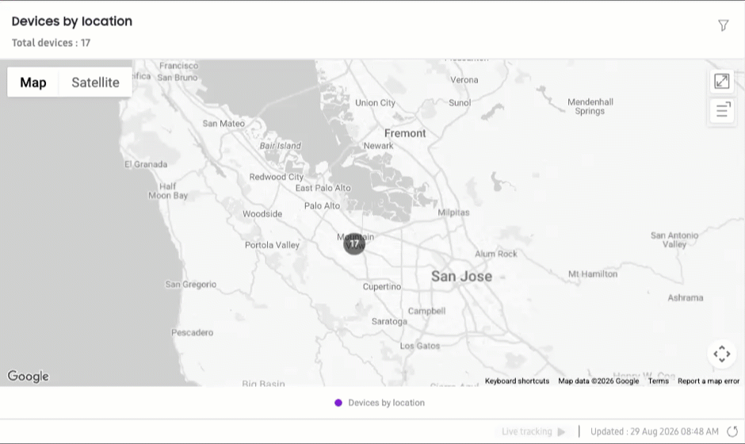
Search for a Specific Device
If you want to find the last geographical location of a specific device, you can do so from the DEVICES table. To do this:
- Click on the Search bar.
- Enter the IMEI number of the device you want to locate.
- If the device is sending location data, you’ll see its last known location in the LAST LOCATION column. Click the link to display the location — represented by a dot — on the map.
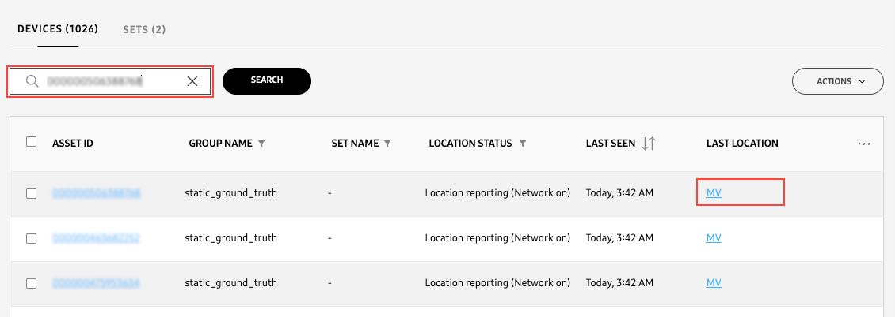
Filter devices
To view only devices on the map with specific characteristics, such as devices that aren’t reachable, you can use a map filter. To do this:
- Click the (Filter) icon.
- Select your filter options (for example, Location not reachable).
- Click APPLY FILTERS to view only matching devices on the map.
- To remove filters, click the Filter icon again, then click CLEAR.
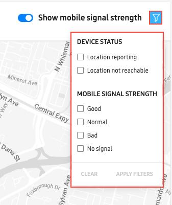
Manage location-enabled devices
The location dashboard provides two tables below the map to help you quickly locate devices and view location-related information. These tables are available on the following tabs:
- DEVICES: Your mobile devices (smartphones and tablets) in the fleet that support location tracking features. See the Supported devices page for a full list of supported devices.
- SETS: Your location-tracking devices organized into logical collections. Unlike system-wide device Groups — which can be used when viewing reports and dashboard insights — Sets are specific to the Location dashboard.
When to use Sets vs. Groups
Both Sets and Groups organize devices, but they serve different purposes:
| Feature | Sets | Groups |
|---|---|---|
| Scope | Location dashboard only | System-wide across all Knox Asset Intelligence features |
| Device membership | A device can belong to multiple Sets | A device can belong to only one Group |
| Creation method | Created directly in the Location console | Created by uploading a CSV file or through an EMM |
| Best for | Temporary tracking collections of devices, location-based monitoring, ad-hoc device groupings for Find asset operations | Permanent device organization by worker type, department, or geographical location |
Use Sets when:
- You need to track a subset of devices for a specific purpose (e.g., devices in a warehouse, devices assigned to a temporary project)
- You want to quickly find and locate multiple devices at once using the Find asset feature
- You need overlapping device collections (the same device can be in multiple Sets)
Use Groups when:
- You need system-wide device organization that applies to all Knox Asset Intelligence features
- You want to organize devices by permanent categories (worker type, department, region)
- You manage devices through an EMM solution
View DEVICES table
The DEVICES table shows all location-enabled devices in your fleet. Note that you can only display seven columns in the table. Change your table columns by clicking the (options) button near the top-right corner of the table.
The following information is available in the table:
| Column | Description |
|---|---|
| ASSET ID | The location-enabled device's IMEI number. |
| GROUP NAME | The name of the device group the device belongs to. Groups are created by uploading a CSV file or through an EMM/UEM platform. Displays - if no group is configured. |
| SET NAME | The name of the set the device belongs to. Sets exist only in the Location dashboard, and unlike Groups, a device can belong to multiple Sets simultaneously. |
| FRIENDLY NAME | A human-readable label assigned to a managed device or asset in an EMM/UEM platform, making it easier to identify than a serial number or IMEI. |
| LOCATION STATUS |
The device's current location reporting status. Available values:
|
| SIGNAL STRENGTH |
The device's mobile network signal strength at the time of last location report. Available values:
|
| MISSING DEVICE ELIGIBILITY | Indicates whether the device can be marked as missing. Available values:
|
| LAST SEEN | The date and time when the device last communicated with the Knox Asset Intelligence server. For offline devices, this reflects when location data was uploaded to the SmartThings server by a nearby Galaxy helper device. |
| LAST LOCATION | The device's last known geographical address. Click the link to display the device's location — represented by a dot — on the map. |
| BATTERY STATUS |
Indicates the device's current battery charge status. Available values:
|
View SETS table
The SETS table shows all available sets in your organization. The following information is available:
| Column | Description |
|---|---|
| SET ID | The system generated ID number for your device set. See About set types to learn more. |
| NAME | Your device set's name. |
| STATUS | The device set's status, either Active or Inactive. |
| DESCRIPTION | The device set's description. |
| DEVICE COUNT | The number of devices in this set. Click to view device IDs on the DEVICES table, filtered by this set's name. |
| CREATED | The date the set was created. |
| MODIFIED | The date the set was last modified. |
About Set types
The Location dashboard categorizes sets as either system-generated or admin-generated.
System-generated sets follow the pattern S.0, S.01, and so on. These sets are automatically created by Knox Asset Intelligence, and cannot be deleted, renamed, or modified. These include:
| Set ID | Set Name | Description |
|---|---|---|
| S.0 | All-devices | Contains all location-enabled devices in your fleet |
| S.01 | Missing-devices | Contains devices marked as missing (created when you mark your first device as missing) |
Admin-generated sets follow the pattern S.1, S.2, S.3, and so on. These sets are manually created by an IT admin, and can be edited and deleted as needed. To create a set:
- On the SETS tab, click NEW SET. The Add devices to new set page opens.
- Select one or more devices from the list, then click ADD. You can also use the search bar to find devices before adding.
- In the Create new set dialogue, give your set a name and optional description, then click ADD. A sequential set ID is automatically assigned. Note the following naming requirements:
- The name can only contain alphabetic characters, numbers, dashes, or periods
- Maximum 18 characters in length
Manage Sets
You can manage any set you create. The following options are available for managing sets:
Edit set information
To edit a set’s information:
- Click a SET ID from the list. A side panel displays your set information.
- Click Edit to change your set name, use the toggle to make the set Active or Inactive, or click DELETE SET to remove it entirely.
Add or remove devices
To add or remove devices in a set:
- Select a set from the list, then click ACTIONS > Add devices to set or Remove devices from set.
- On the following page, select the devices from the list, then click ADD or REMOVE.
Delete a set
To delete a set:
- Select one or more sets from the list, then click ACTIONS > Delete set(s).
- On the following window, click CONFIRM.
Download set information
To download sets information as a CSV file:
- Select one or more sets from the list.
- Click ACTIONS > Download CSV.
Locate lost devices
The Location dashboard can be leveraged to help locate lost devices, trigger audible alerts, request immediate location updates, or mark devices as missing to enable offline tracking through SmartThings Find.
Find asset
The Find asset action can be used to trigger audible, visual, or haptic alerts on devices to help locate them in the real world. To use this feature, go to the DEVICES tab, use the checkboxes to select one or more devices, then click ACTIONS > Find asset.
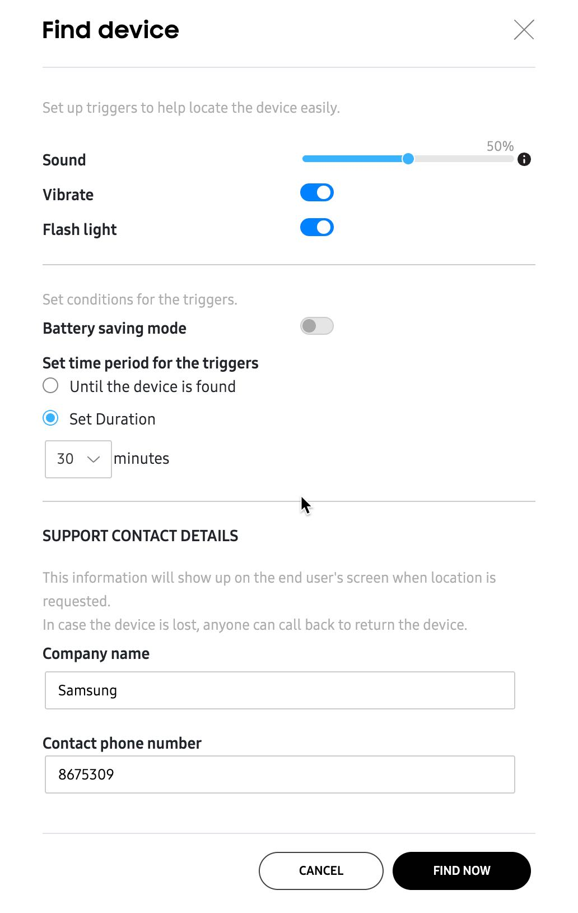
In the pop-up window, configure the following settings to help you find a device:
-
Set up triggers to help you find the device:
- Sound: Set the alert volume level by moving the slider.
- Vibrate: Toggle to force the device to vibrate (Default: Off).
- Flash light: Toggle to turn on the camera’s flashlight (Default: Off).
-
Set up conditions for the alert:
- Battery saving mode: Toggle to place the device in battery saving mode when an alert is sent (Default: Off).
- Set time period for the triggers, select the duration:
- Until the device is found: Activates the alert until the device user responds to it.
- Set duration (Default: 30 minutes): Determines the amount of time that the alert is active.
-
Set up contact details:
- In SUPPORT CONTACT DETAILS, enter the name of your organization and a contact phone number. Users will see a notification asking them to call this number if the device is found.
-
Click FIND NOW to send the alert and notification to the selected devices. After you click FIND NOW, the user sees a full screen notification on the device, letting them know that the admin is trying to locate the device.
Get a device’s latest location
If you want to get the last known location for a device without waiting for its next update interval, use the Get the latest location action.
- On the DEVICES tab, select one or more devices, then click ACTIONS > Get the latest location.
- The table will update and you will see:
- Update pending in the STATUS column for your queried device(s).
- An updated date & time in the LAST SEEN column and location information in the LAST LOCATION if they respond.
Offline Location Tracking
Knox Asset Intelligence can track devices even when they’re offline or powered off by leveraging Samsung’s SmartThings Find network. This feature uses nearby Galaxy devices to relay location data from your missing devices to the Knox Asset Intelligence server.
To learn how to use offline location tracking features, see Locate offline devices.
Troubleshoot common issues
Use this section to diagnose and resolve common location tracking issues, such as devices not reporting location or inability to mark devices as missing.
| Issue | Possible Cause | Suggested Action |
|---|---|---|
| Device shows “Update pending” status | Device is not active or not responding | Wait up to one hour for the device to respond. If no response, the device will be marked as “Location not reachable”. |
| Cannot mark device as missing | Device is not eligible | Verify the device meets eligibility criteria: Knox Asset Intelligence agent 1.58+, Location data upload policy enabled, eligible Location status, FMM not revoked. |
| Location data not appearing | Location tracking not enabled | Verify Location tracking settings are enabled and users have granted Location permissions. |
| Live tracking button is unavailable | Map not zoomed in enough | Zoom in on the map until the Live tracking button becomes clickable. |
Is this page helpful?
Thank you for your feedback!